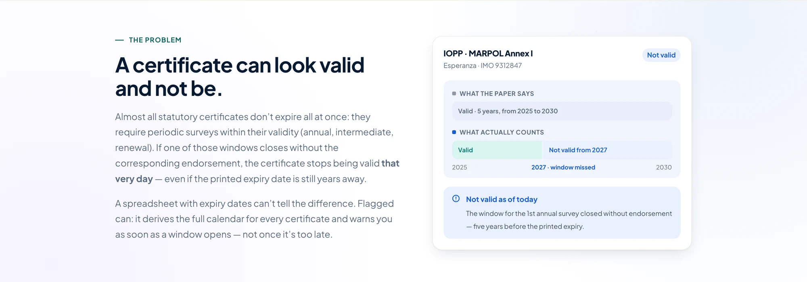
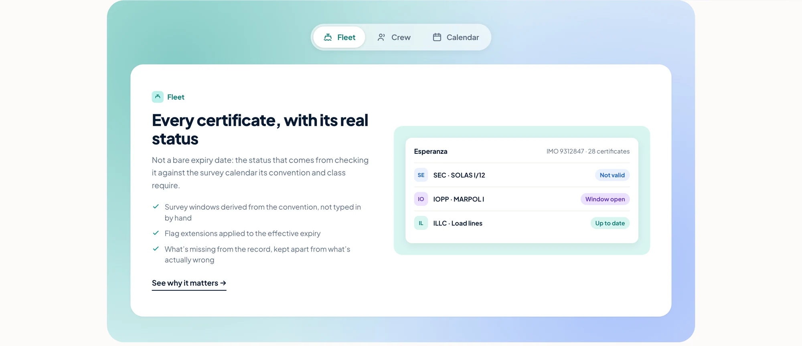
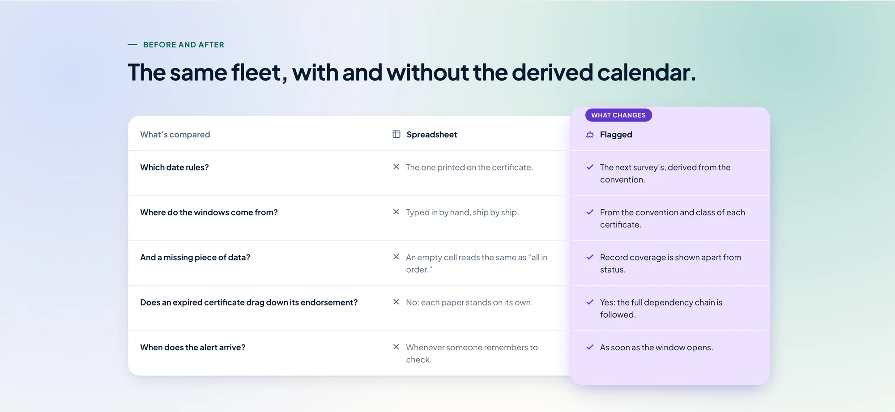
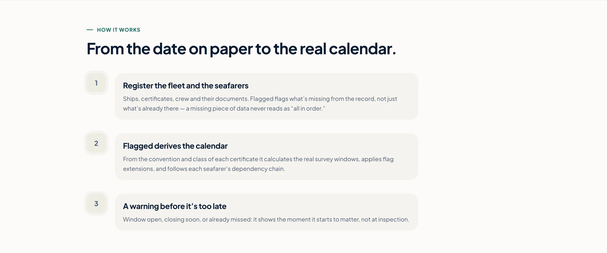
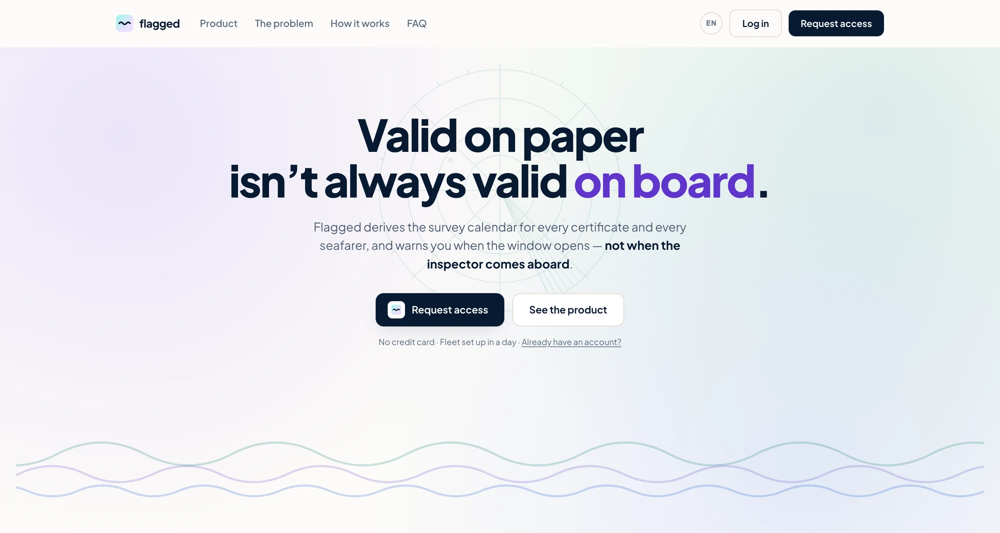

Flagged
A ship's certificate can read 2030 on the paper and have stopped being valid months ago. The same is true of the licence in a seafarer's pocket. Flagged is built on that gap, and on eight years of watching it open from inside a consulate.

Where this came from
For eight years I worked in the maritime department of the Consulate of Panama in London. Panama is the largest ship registry in the world, which means a quiet office in London sits on the paperwork of a great many vessels and a great many seafarers — and I spent those years watching how that paperwork actually moves between a consulate, a classification society and a shipping company.
So this is not a market gap spotted from the outside. It is a thing I watched work, and more often fail, from inside the institution that issues the documents. The crew half of the product is not an extension bolted on to make the idea bigger either: “gente de mar” is the real name of the Panamanian authority that handles it, the Dirección General de Gente de Mar, and it is the half where I saw people get hurt.
The problem
A statutory certificate is issued for five years, but that validity is conditional. It hangs on surveys that have to happen inside a window — three months either side of the anniversary date. If a window closes without an endorsement, the certificate is no longer valid, whatever the printed expiry says.
Seafarer licences work the same way, and carry the same trap. Small agents track both in spreadsheets, and a spreadsheet holds the expiry date and nothing else. So it stays green on a certificate that would ground the vessel, and by the time the printed date is a problem, the problem is already months old. The inspector finds it before the agent does.

What the research said
I wrote a survey for shipping agents and fleet managers and got four long, specific answers back. One question asked them to rate, from one to five, how painful it is to coordinate vessel and crew documentation at the same time. Two of them answered eight and ten. All four went off the end of the scale, which is the single strongest thing the research produced: the problem is not annoying, it is serious, and it is serious for everybody.
“When a document expires, the seafarer is discharged at the first convenient port.”
— Crew and flag administration department
Every consequence they described was a person's, not a vessel's: crew put ashore, a ship held in port over somebody's medical certificate, an extra fee paid to rush a renewal that should have been started three months earlier. The half of the product I was least sure about turned out to be where the pain actually lives.
Two other things came back that I did not expect. All four were already keeping vessels and crew in the same spreadsheet — the unified view is not a feature I invented for them, it is the way they already work, badly. And none of them used specialised software. Not Certware, not MariApps. One of them described themselves as waiting for the right solution, which is a market gap stated out loud.
The decision everything else hangs on
Status comes from the next required action, not from the date printed on the document. That single rule is what separates Flagged from a reminder app, and it is the one the test suite guards hardest, because it is the one that must never quietly regress.
Everything downstream follows from it: the survey windows are derived from the convention and the class that certificate answers to, rather than typed in by hand, and flag extensions are applied to the effective expiry rather than noted in a comment nobody reads.

What isn't known doesn't get painted green
Coverage — confirmed, pending, not applicable — is a separate axis from the traffic light. A row nobody has filled in yet shows as a gap, not as a pass, and it clears nobody to sail.
It sounds like a detail. It is the difference between a dashboard you can act on and one you have to go and re-check by hand, which is the spreadsheet again with better typography.
One system, because the pain is already one problem
This is the line that separates Flagged from what already exists. MariApps and DNV both build serious software, but they build naval ERPs — payroll, dry-docking, business intelligence — for operators with hundreds of vessels, and they tend to be strong on ships or strong on crew rather than on both. The generic expiry-reminder tools go the other way: one of them even has a shipping page, but it knows nothing about survey windows and nothing about seafarers.
Nobody serves the small agent, who is the person actually holding two spreadsheets. So vessels and seafarers are the same kind of object here, with the same screens and the same states.
Which also means an expiry has to be crossed with who is on board and with what the minimum safe manning document requires before it becomes an alert. A master whose licence lapses while they are ashore is not an emergency; the same lapse at sea, on a ship that needs that rank aboard, is. Without the filter the list fills with false positives, and a list of false positives stops being read — which is the same as having no alerts at all.

Nobody starts from an empty table
The surest way to kill this product would be to open it on a blank grid and ask a shipping agent to build their own compliance catalogue. So registering a vessel scaffolds the roughly twenty-eight rows the catalogue expects for that flag and that ship type, all marked pending.
From there the user confirms one date per row — the date of issue — and the expiry, the survey calendar and the renewal steps are all derived from it. Crew works the same way, scaffolded by rank.

How it looks
The interface had to carry a lot of state without ever feeling like an alarm panel. Three statuses, each with its own ink, its own tint and its own border, so they separate on a laptop screen in daylight on a desk by a window — which is where this gets read. Plus Jakarta Sans throughout, tight tracking on the headlines, and no colour doing a job that a word could do better.
The whole thing runs in Spanish and English, switched from one button, because the users are Panamanian-flag agents working with crews and authorities that do not share a language.

Where it is now
Live, multi-tenant, and in use as a working product rather than a prototype. Every table carries an organisation, no query is written without filtering on it, and a record belonging to someone else returns a 404 rather than a 403 — refusing to confirm that it exists at all.
What isn't built yet, in order of how much it matters: real email delivery — the dispatch is calculated and exposed, but there is no transport behind it; attaching the actual PDF to a certificate; registering vessels and seafarers from the interface rather than through the API; and self-service signup for new organisations.
Flagged is mine end to end — the research, the domain model, the product decisions, the interface and the front end. It started as something I watched go wrong for eight years and did not have a tool for. See it live.